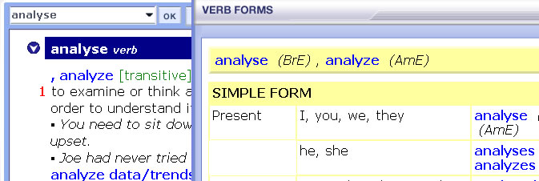

You can see the inflections for all regular and irregular verbs in the dictionary by clicking on the 'Verb form' button in the entry toolbar. If a verb has different forms in American and British English they are labelled.
